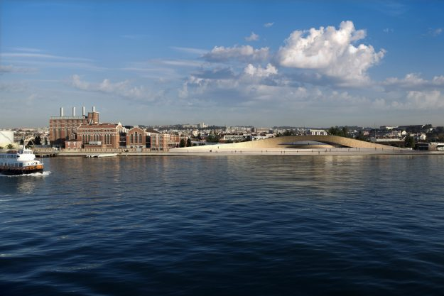

TripAdvisory
Welcome To Lisbon, Portugal
Art and Architecture of Lisbon
As cultural events go, this one is set to top the bill in Portugal this year. The grand opening in Lisbon of MAAT – the museum for Art, Architecture and Technology, has now been earmarked for a spectacular launch early next month.
The space allows the general public to walk both under, over and through the Centre. It will also open access to the city via a new footbridge over the railways tracks. She explained that the roof too would become part of an outdoor room, making it a conceptual and physical attachment with Lisbon’s heart.
The organisers have already planned their first three shows at MAAT. The first display will be Pynchon Park, specifically created for the main room of the new building by French artist, Dominique Gonzalez-Foerster. The design features a "gracefully undulating roof, conceived to create a new public space above the galleries" as well as calçada-tile pavements to link the new public spaces with the street.
3D tiles will bring life to the facade, producing "a complex surface that gives readings of water, light and shadow." Along with the new kunsthall, the museum will repurpose a neighboring early 20th century power station building, which will host permanent science and electricity exhibits. The new building will be presented to the public in October with the exhibition UTOPIA/DYSTOPIA, PART 1: Dominique Gonzalez-Foerster.